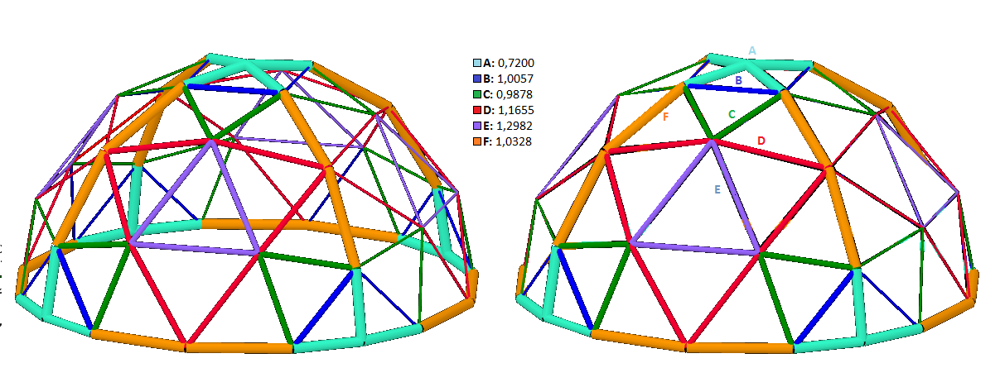

1- Saiba mais sobre o projeto
O projeto que deu origem a este site se iniciou a partir da idéia de que as estruturas tensígrids e geodésicas eram pouco empregadas (em comparação aos diversos tipos de estruturas convencionais) pelo fato de a matemática necessária às suas construções ser pouco acessível e até mesmo desconhecida por muitas pessoas. Assim, começamos a realizar manipulações algébricas nas fórmulas necessárias à obtenção de dados para a construção de tais estruturas. Posteriormente, iniciamos a construção deste site, que possui uma calculadora de elementos para estruturas tensígrids, o que possibilita que qualquer pessoa possa obter as informações necessárias para construir sua própria estrutura, de forma fácil e rápida.
2- Saiba mais sobre a tensegridade
A tensegridade (tensão integral) é a palavra criada por Buckminster Fuller, para referenciar estruturas nas quais as forças tênseis e compressivas atuam juntas, o que proporciona um maior equilíbrio. Essas estruturas acabam sendo mais eficientes e econômicas, já que atingem o seu ponto de equilíbrio com a utilização de uma menor quantidade de materiais.
De acordo com Fuller, a tensegridade é “uma propriedade presente em objetos cujos componentes utilizam a tração e a compressão de forma combinada, o que proporciona estabilidade e resistência, assegurando sua integridade global”.
3- Saiba mais sobre Fuller
“O propósito da nossa vida é acrescentar valor à vida das pessoas desta geração e das gerações seguintes.”
Filósofo, arquiteto, designer, escritor, cientista e um verdadeiro revolucionário de seu tempo, o norte americano Richard Buckminster Fuller, nascido em 1895, na cidade de Milton, no estado da Flórida, procurou, durante sua vida, fazer algo pelo bem da humanidade. Após pensar até mesmo em se suicidar, Fuller decidiu fazer uma espécie de “experiência”, que tinha como objetivo descobrir o que um homem em suas condições poderia fazer pelo bem coletivo, e não somente individual.
Suas contribuições tiveram abrangência em várias áreas, sendo as de maior destaque a arquitetura e o design. Fuller
projetos que sempre possuíam o diferencial da economia combinada à eficiência. Algumas de suas invenções, como a “Dymaxion House” e o “Dymaxion Car”, evidenciaram sua vontade de “fazer mais com menos”. No entanto, foi trabalhando com as estruturas geodésicas que ele se tornou mundialmente conhecido. Projetou mais de 50.000 geodésicas em todo o mundo, comprovando a eficiência e economia que essas estruturas apresentam.
4- Saiba mais sobre Michael Geiwitz
Michael Geiwitz é um professor de matemática e física que produz alguns modelos de geodésicas no GeoGebra. Seu modelo de geodésica octaédrica de frequência 4 foi amplamente utilizado por mim em pesquisas acadêmicas.
